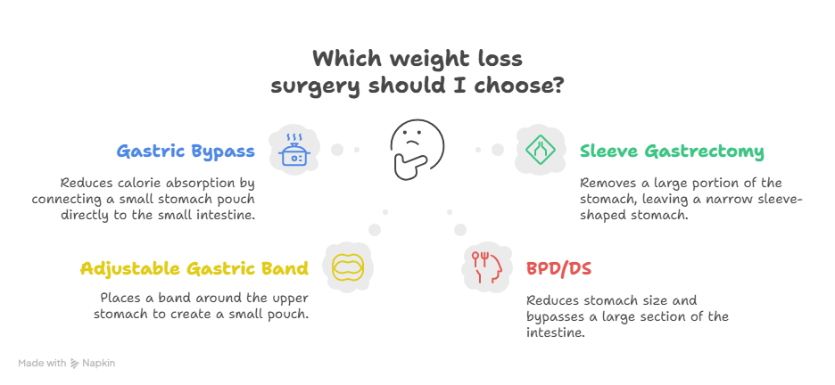
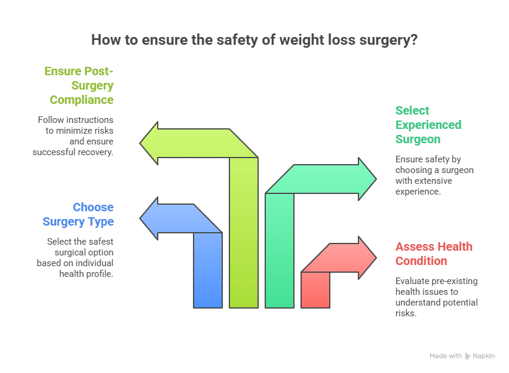

Obesity is one of the most common health challenges worldwide, linked with conditions such as diabetes, hypertension, heart disease, sleep apnea, and even certain cancers. For many individuals, diet and exercise alone may not provide long-term success in managing obesity. This is where weight loss surgery (also called bariatric surgery) becomes an option.
But a common concern that arises is: Is weight loss surgery safe? It’s natural to be cautious when considering a surgical procedure, especially one that permanently alters your digestive system. In this comprehensive guide, we will explore the safety of weight loss surgery, the risks involved, the safety improvements made over the years, and what patients should know before making a decision.
Understanding Weight Loss Surgery

Weight loss surgery encompasses a range of surgical procedures that help patients lose weight by modifying the stomach and digestive system. The most common types are:
- Gastric Bypass (Roux-en-Y): The stomach is divided into a small pouch and connected directly to the small intestine, reducing calorie absorption.
- Sleeve Gastrectomy: A large portion of the stomach is removed, leaving a narrow “sleeve”-shaped stomach that holds less food.
- Adjustable Gastric Band: A band is placed around the upper part of the stomach to create a small pouch.
- Biliopancreatic Diversion with Duodenal Switch (BPD/DS): A more complex surgery that reduces stomach size and bypasses a large section of the intestine.
Each of these surgeries carries unique risks and benefits, but overall, they are considered safe when performed by skilled surgeons.
Is Weight Loss Surgery safe?
The direct answer: Yes, weight loss surgery is generally safe when performed by experienced surgeons in accredited centers.
Advancements in laparoscopic (minimally invasive) techniques have greatly reduced complications compared to earlier years. Studies show that the risks of bariatric surgery are comparable to, or even lower than, other common surgeries such as gallbladder removal or hip replacement.
In fact, for people with severe obesity and obesity-related health issues, the benefits of weight loss surgery often outweigh the risks. Patients experience long-term improvement in conditions like type 2 diabetes, high blood pressure, and sleep apnea.
How Safe is Weight Loss Surgery today?
Many people wonder: How safe is weight loss surgery compared to other procedures? Let’s look at the facts:
- Mortality Rate: The risk of death from bariatric surgery is less than 0.1–0.3%, which is lower than many other abdominal surgeries.
- Complication Rate: The risk of major complications is around 4–6%, most of which are manageable.
- Long-Term Safety: Patients who undergo weight loss surgery live longer and have a lower risk of obesity-related diseases compared to those who remain untreated.
- Improved Techniques: Modern laparoscopic surgery involves smaller cuts, reduced infection risks, quicker recovery, and shorter hospital stays.
So, is weight loss surgery safe? — Yes, especially when compared to the long-term dangers of untreated obesity.
Factors That Influence Safety

Although weight loss surgery is safe overall, certain factors can influence the level of risk:
- Patient’s Health Condition
- Patients with heart disease, lung disease, or uncontrolled diabetes may face higher risks.
- A thorough medical evaluation is essential before surgery.
- Type of Surgery
- Gastric bypass and duodenal switch carry slightly higher complication rates than gastric sleeve or gastric band.
- Your surgeon will recommend the safest option for your health profile.
- Surgeon’s Experience
- Safety depends heavily on choosing an experienced surgeon. For example, Dr. Atul Peter, a leading expert in Weight Loss Surgery in Delhi, has extensive experience with complex bariatric procedures.
- Post-Surgery Compliance
- Following dietary instructions, taking supplements, and attending follow-up appointments greatly reduce risks.
Common Risks and Complications
Like all surgeries, bariatric surgery carries risks. However, being aware of them helps in better preparation.
- Short-Term Risks (within a few weeks of surgery):
- Bleeding
- Infection
- Leakage at the surgical site
- Blood clots
- Long-Term Risks:
- Nutritional deficiencies (vitamin B12, iron, calcium)
- Dumping syndrome (rapid gastric emptying leading to nausea, diarrhea, or weakness)
- Gallstones due to rapid weight loss
- Rarely, bowel obstruction or ulcers
These complications are usually manageable with medical care and lifestyle adjustments.
Benefits that Outweigh Risks
When people ask, “Is weight loss surgery safe?”, they should also consider the tremendous benefits:
- Significant and sustained weight loss
- Improved quality of life and mobility
- Remission or improvement of diabetes, hypertension, and sleep apnea
- Reduced risk of heart attack, stroke, and premature death
- Better fertility and hormonal balance in some patients
In many cases, the risks of not having surgery (living with obesity) are far greater than the surgical risks themselves.
Safety Tips for Patients Considering Surgery
If you are planning bariatric surgery, here are the steps to ensure maximum safety:
- Choose the right surgeon and hospital.
- Look for specialists like Dr. Atul Peter, who is renowned for Weight Loss Surgery in Delhi and has a track record of safe, successful outcomes.
- Complete pre-surgery evaluations.
- Medical tests, psychological assessments, and dietary consultations help ensure readiness.
- Follow all pre-op and post-op instructions.
- Avoid smoking, alcohol, and certain medications before surgery.
- Stick to the post-surgery diet and activity plan strictly.
- Attend regular follow-ups.
- Monitoring allows early detection of complications.
- Take recommended supplements.
- Prevent deficiencies by taking multivitamins and minerals.
Weight Loss Surgery by Dr. Atul Peters!
Contact Now!
Book Your Appointment
Conclusion
So, is weight loss surgery safe? The answer is yes — when performed under expert care, with proper patient preparation, and with lifelong commitment to healthy habits. While no surgery is without risks, bariatric surgery has been proven to be a safe and effective tool for fighting obesity and related diseases.
Choosing an experienced surgeon, following medical advice, and understanding both the risks and benefits are key to a safe and successful outcome. For patients in India, consulting experts such as Dr. Atul Peter, a trusted name in Weight Loss Surgery in Delhi, ensures the highest safety standards and best results.
Frequently Asked Questions
Is Weight Loss Surgery safe for everyone?
How Safe is Weight Loss Surgery compared to not having it?
What is the Safest type of Weight Loss Surgery?
Can complications occur years after surgery?
How do I ensure my Weight Loss Surgery is safe?
Recommended Further Reading
Have Personal Health Questions?
Consult with Dr. Atul Peters and our expert multidisciplinary team at Max Smart Super Speciality Hospital, Saket, New Delhi.
Book Your Consultation